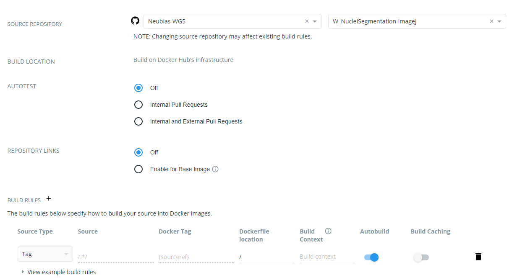
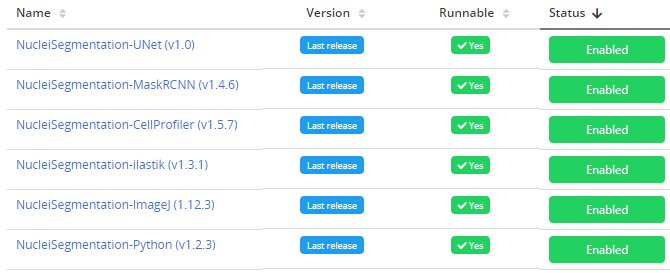
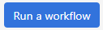
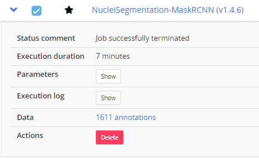

1. Create a workflow GitHub repository and add trusted source
Create a workflow repository in a GitHub source trusted by the BIAFLOWS
instance you plan to add the workflow to. The names of workflow repositories
should start by a fixed prefix (W_ recommended since it is the convention used by
BIAFLOWS online instance) and contain no space.
Connect to your local BIAFLOWS server (or sandbox server), click on Workflows tab and make
sure that your GitHub and DockerHub accounts are added as trusted sources at the bottom of the page.
Fill in your GitHub and DockerHub user account names and set matching Prefix (e.g. W_).
2. Add the required files to the workflow repository
It is recommended to reuse existing files from similar workflow repositories.
The following workflow types have already been tested: ImageJ / FIJI macro, ImageJ Python script, ICY protocol, CellProfiler pipeline,
Octave script, ilastik pipeline, Vaa3D plugin, Python 2.X or 3.X script based on
Scikit-learn, Keras, Pytorch and MXNet.
They are all available from:
https://github.com/Neubias-WG5
The necessary files are:
- A descriptor from the Problem Class
you target (e.g. Object Segmentation)
- A DockerFile configuring the BIA platform you target (e.g ImageJ)
- A wrapper script from the Problem Class and the workflow type you target.
- A file holding the workflow code (e.g. an ImageJ macro), unless some code is directly called from the wrapper script.
The flag is_2d specifies if the images from the Problem hold
two spatial dimensions (three spatial dimensions if set to false).
3. Update sections of the Descriptor
Workflow and associated Docker image names
{
"name": "NucleiTracking-ImageJ",
"container-image": {
"image": "neubiaswg5/w_nucleitracking-imagej",
"type": "singularity"
}
- Update name to match GitHub workflow repository name (without prefix)
- Update image to match the name of your workflow GitHub repository (lower case only)
Command line call of the Docker image
"description": "Track nuclei in a time series by doing 3D segmentation.",
"command-line": "python wrapper.py CYTOMINE_HOST CYTOMINE_PUBLIC_KEY CYTOMINE_PRIVATE_KEY CYTOMINE_ID_PROJECT CYTOMINE_ID_SOFTWARE IJ_RADIUS IJ_THRESHOLD IJ_ERODE_RADIUS ",
- Description: Update workflow description
- Command-line: Update parameter list (here last 3 arguments)
Workflow parameter sections
{
"id": "ij_radius",
"value-key": "@ID",
"command-line-flag": "--@id",
"name": "Radius",
"description": "Radius of the Gaussian filter",
"type": "Number",
"default-value": 3,
"optional": true
},
Update / add as many parameter sections as required to match the parameter list from command line call.
- id: should match parameter name in command line call (lower case)
- name: name that will appear in BIAFLOWS user interface (parameter dialog box)
- description: context help in BIAFLOWS user interface (parameter dialog box)
- type: "String" or "Number"
- default-value: the default value in BIAFLOWS user interface (parameter dialog box).
4. Update DockerFile
If applicable, update the line copying the workflow from the GitHub repository to the workflow Docker image, for instance:
ADD NucleiTracking.ijm /fiji/macros/macro.ijm
If necessary, append commands to install additional required libraries/plugins to the execution environment.
5. Update wrapper script
Update workflow command line call in wrapper.py.
command = "/usr/bin/xvfb-run ./ImageJ-linux64 -macro macro.ijm " \
"\"input={}, output={}, ij_radius={}, ij_threshold={}, ij_erode_radius={}\" -batch".format(
in_path, out_path, nj.parameters.ij_radius, nj.parameters.ij_threshold, nj.parameters.ij_erode_radius)
Update/add parameters to match parameters defined in JSON descriptor (Step 2).
6. Adapt your workflow script
If applicable, adapt your workflow script to fulfil workflow requirements and parse parameters
from command line. For instance for an ImageJ macro:
for(i=0; i < parts.length; i++) {
nameAndValue = split(parts[i], "=");
if (indexOf(nameAndValue[0], "input") > -1) inputDir=nameAndValue[1];
if (indexOf(nameAndValue[0], "output") > -1) outputDir=nameAndValue[1];
if (indexOf(nameAndValue[0], "ij_radius") > -1) GaussRad=nameAndValue[1];
if (indexOf(nameAndValue[0], "ij_threshold") > -1) Thr=nameAndValue[1];
if (indexOf(nameAndValue[0], "ij_erode_radius") > -1) ErodeRad=nameAndValue[1];
}
images = getFileList(inputDir);
for(i=0; i < images.length; i++) {
//DO SOMETHING
}
7. Create Docker image in DockerHub
Sign in to DockerHub and create a new public repository. The repository name must match the container-image name used in
Step 3. Once configured, click Create.
8. Link repository to workflow GitHub repository & configure workflow Docker image automated build
Click on the Builds tab and then the Configure Automated Builds blue button.
Configure the build according to the following example:

Especially, note that Source Type must be set to Tag, Source is /.*/ and Docker Tag is {sourceref}.
9. Trigger a workflow release
Trigger a release from GitHub workflow repository with version tag such as
v0.1, v0.2, v1.0...
10. Workflow Docker image build
Check from DockerHub that the workflow Docker image has built successfully.
If not, parse the log and fix issues by modifying DockerFile and re-triggering a
new release.
11. Add workflow to BIAFLOWS problem
Once the Docker image is built, a BIAFLOWS instance fetches the image
from the trusted source and make it available (possibly after up to 5/10 minutes).
Sign in as administrator to BIAFLOWS (or regular sandbox user) and browse to the Problem you want to
add the workflow to. Then, click on the
Configuration icon (bottom left of the side bar).
Search for the workflow (recently added workflows are on top of the list) and
enable it. Older workflow versions can be disabled if this is an update
to an existing workflow.

12. Run the workflow
Test the workflow by running it from BIAFLOWS / Workflow runs
(requires execution rights).

If execution fails, read the execution log, update the code and trigger a new release.
